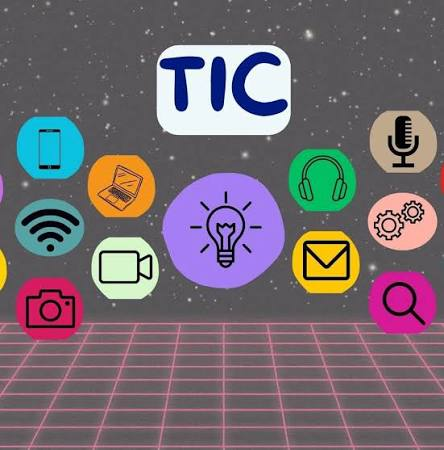

Introducción a las TICs

Las Tecnologías de la Información y la Comunicación son el conjunto de recursos, herramientas y programas que se utilizan para procesar, administrar y compartir la información mediante diversos soportes tecnológicos.
Autor: Kevin Yael Barron Arce
Grupo: 4DSM-G